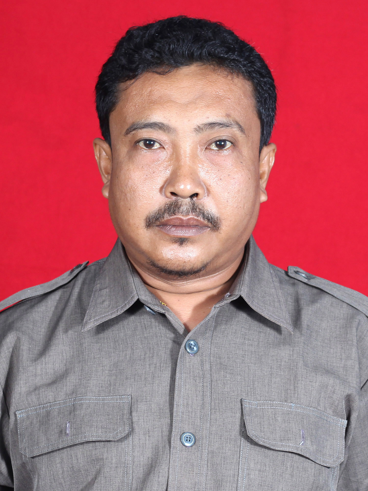
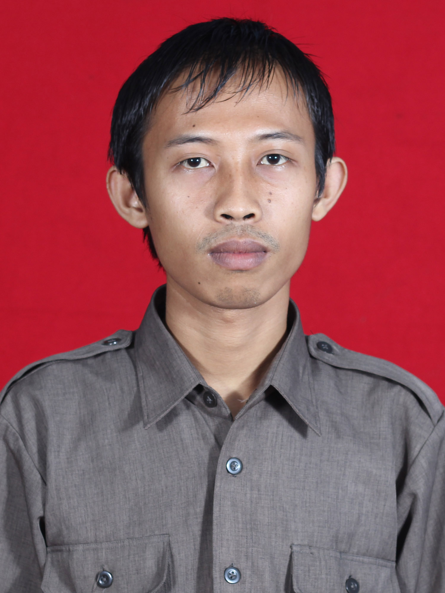
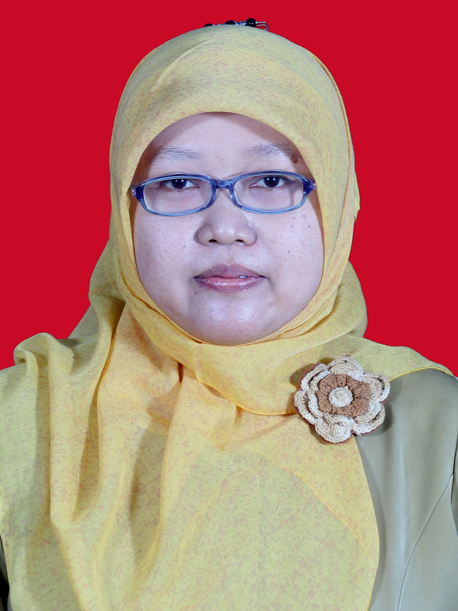
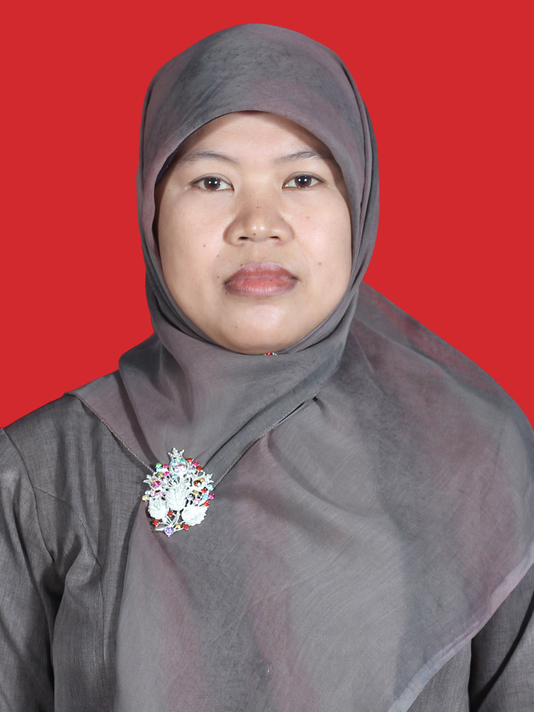
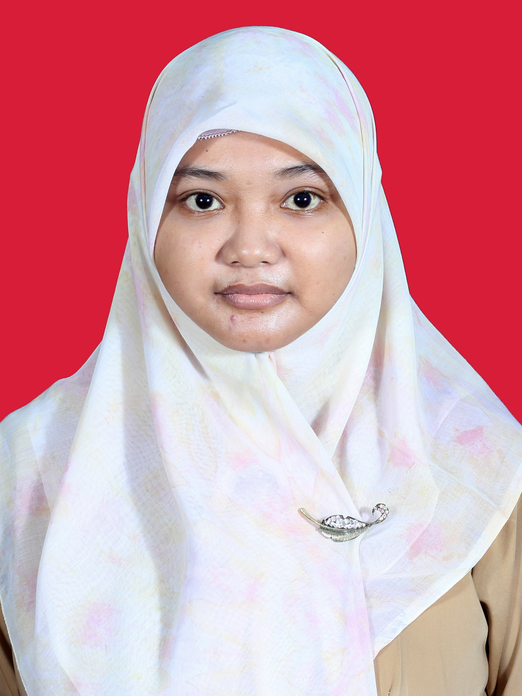
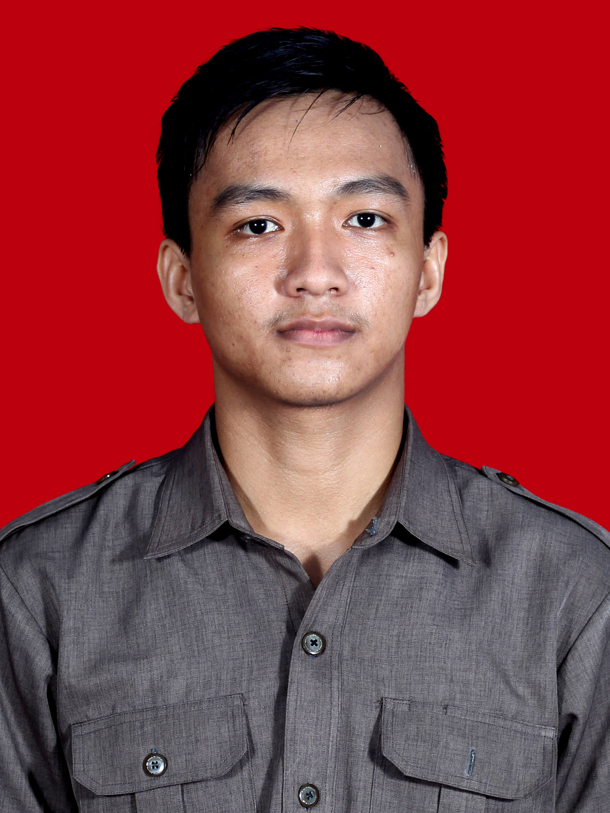
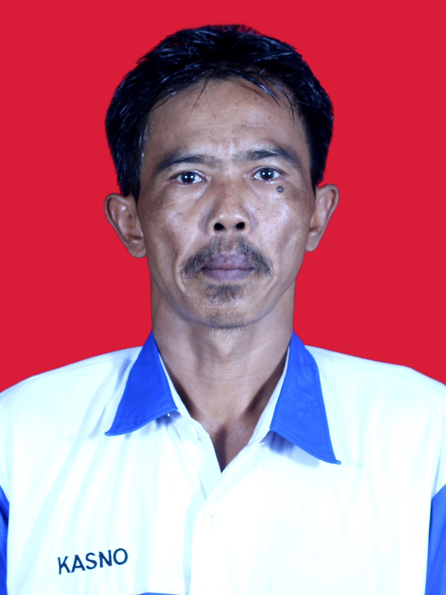

| 1 |
 |
Bagus Andrianto |
Kepala Tata Usaha |
SMA IPA |
Desa Klampok RT.01 / RW.06, kec. Purwareja Klampok, kab.Banjarnegara |
2007 |
| 2 |
 |
Didit Witanto |
Toolman TKR |
SMK Otomotif |
Desa Kedunglegok, kec. Kemangkon, kab.Purbalingga |
2006 |
| 3 |
 |
Wahyu Elyana |
Staf Tata Usaha |
S1 Hukum |
Desa Nangka Sawit RT.02 / RW.01, kec. Kejobong, kab.Purbalingga |
2007 |
| 4 |
 |
Yuli Winarni |
Staf Tata Usaha |
Staf Tata Usaha |
Desa Purwasaba RT.03 / RW.04, kec. Mandiraja, kab.Banjarnegara |
2008 |
| 5 |
 |
Isna Widyaningrum |
Staf Tata Usaha |
S1 Akuntansi |
Desa Kembangan RT.03 / RW.03, kec. Bukateja, kab.Purbalingga |
2009 |
| 6 |
 |
Arnanda Raenaldi |
Toolman TKJ |
SMK Teknik Komputer Jaringan |
Desa Kembangan RT.05 / RW.04 , kec. Bukateja, kab.Purbalingga |
2013 |
| 7 |
 |
Eko Sigit Subangun |
Toolman TKJ |
SMK Teknik Komputer Jaringan |
Desa Karangnangka RT.06 / RW.01 , kec. Bukateja, kab.Purbalingga |
2016 |
| 8 |
 |
Kasno Hadi P |
Petugas Kebersihan |
SMP |
Desa Klampok , kec. Purwareja Klampok, kab.Banjarnegara |
2013 |